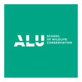

Professional Development Associate
ALU School of Wildlife Conservation
Oct 2026 – Present · Kigali (remote)
- Support the Manager of Professional Development in designing and delivering courses for African conservation managers.
- Coordinate schedules, recruitment, payments and certification, and support course marketing and hybrid delivery.
- Build systems to track participant progress and improve retention; support the annual Business of Conservation Conference.